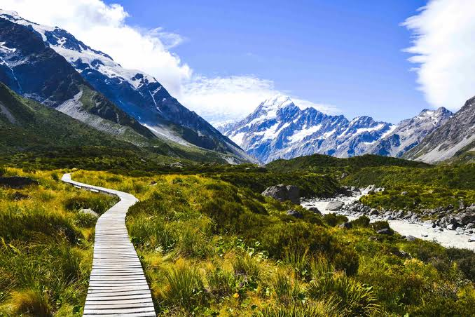
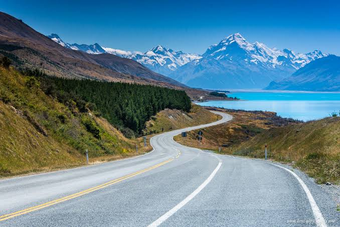
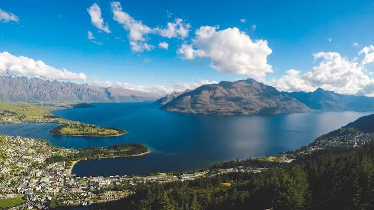

Discover the premium experiences curated by The Falcon Tour. Balanced pacing, local guides, and top class stays.
Upon arrival, collect your rental vehicle and self drive to your accommodation. Auckland is New Zealand's largest city, set between two harbours with gentle sandy shores on the east coast and black sand, wild surf beaches on the west coast. Home to sheltered, sparkling blue waters dotted with beautiful emerald islands, we recommend getting out on the water when you are here. Overnight: Auckland
Journey through the rolling green hills of Waitomo and enjoy a tour through an underground wonderland of caves decorated with galaxies of glowworms. Continue to Matamata for a charming tour of unique, character Hobbit homes, gardens and the watering hole just as you see in the movies. Finishing off a visually fulfilling day, continue on to Rotorua, a bubbling and steaming destination like nowhere else. Overnight: Rotorua Waitomo Glowworm Caves Guided Tour Hobbiton Movie Set Tour
Rotorua is surrounded by a fascinating geothermal landscape with its unique steam vents, spouting geysers and bubbling mud pool set alongside freshwater lakes and majestic native forests. It is also a region immersed in fascinating Maori myths and legends. Late afternoon you'll visit one of the local geothermal attractions for a guided tour through the Maori Arts and Crafts Institute, the Kiwi Conservation Centre and the geothermal valley. Then enjoy a Hangi Dinner overlooking the valley and geyser, followed by a 40 minute cultural performance. The evening culminates with hot chocolate and pudding on the geyser terrace. Overnight: Rotorua INCLUDED ACTIVITES Te Ra/Te Po Day and Evening Experience
There’s a bit of everything on today’s drive past Great Lake Taupo forest plantations, rugged hills, beautiful valleys, gentle plains and huge vistas. Following an earthquake in 1931, a rebuild saw Napier completely redesigned in the style of the times. Buildings were constructed in the Art Deco style with Maori motifs to give the city a unique New Zealand character. Today, the delightful seaside city of Napier has the extra-ordinary feeling of a time capsule with its seamless line of some of the world's finest 1930's architecture. Enjoy a guided tour of Napier's unique history and architecture. Overnight: Napier INCLUDED ACTIVITES Art Deco Afternoon Walk
Today's travel south may be via the spectacular Manawatu Gorge or through the beautiful Tuki Tuki Valley and Wairarapa Wine region to reach Wellington. Set between a sparking harbour and rolling green hills the compact city of Wellington is best explored on foot. Great shopping, arts culture, cafes and restaurants are all within minutes of the city’s untouched nature spots. . We recommend adding a guided tour a Te Papa for a greater insight into New Zealand’s rich history and culture. Overnight: Wellington
New Zealand's North and South Islands are separated by three hours of sensational scenery and ocean fresh air. Departing Wellington, your ship will ferry you across the Cook Strait, past the beautiful beaches, bays and coves of the Marlborough Sounds to the historic port town of Picton. With its rugged mountain ranges and fertile pains, Marlborough has a lot to offer with its water, wilderness and wine. A short drive takes you to the compact town centre of Blenheim. Overnight: Blenheim INCLUDED ACTIVITES North to South Island Ferry Crossing
The Pacific Coast Road to Christchurch presents one of New Zealand's most dramatic drives with breath-taking mountains on one side and wild pounding ocean on the other. The seaside settlement of Kaikoura is set midway and overlooked by majestic mountains. The unique marine geography at this location provides the perfect environment for Sperm Whales and other marine life. On to Christchurch, a vibrant, ever-changing city with inner city parks and gardens delightfully interwoven by the meandering Avon River. Overnight: Christchurch
Depart across the Canterbury Plains, a fertile patchwork made with every shade of green, through the spectacular scenery of Arthurs Pass National Park and on to the West Coast. New Zealand’s rugged West Coast is a wild and untamed place known for its rivers, rainforests, glaciers and geological treasures. Here, mighty rivers of solid white ice, relics of the world’s last ice-age, tumble down the rocky valleys. Overnight: Greymouth
A temperate climate at a low altitude makes Fox and Franz Josef Glaciers among the most convenient to visit in the world. Steep valleys bear scars from where glaciers have retreated and advanced over millennia and here, the ice age is still underway. For an absolute bucket list experience, add a scenic flight with a glacier landing and a thrilling hike to your itinerary. Overnight: Glacier Region
Travel through wilderness towns, waterfalls and river scenery on today’s scenic journey to Queenstown. We recommend stopping for a break, and to stretch the legs, at Makarora’s Blue Pools. After settling in at your Queenstown accommodation, make your way to the Skyline Base for a Gondola Ride to the top of Bob’s Peak and enjoy some spectacular panoramic views high above Queenstown. You might also like to add some Luge rides to your bucket list for some extra fun. Overnight: Queenstown
Magnificent vistas and majestic mountains dominate this compact alpine resort town and with such an expansive natural physical environment it is not surprising that Queenstown has been described as the Adventure Capital of the World. Overnight: Queenstown
Today’s journey takes you to a scenic wonderland with golden tussocks, snow-capped mountains and turquoise lakes. Hug the shores of beautiful Lake Pukaki to a rugged land of ice and rock, home to Aoraki Mt Cook, New Zealand’s highest mountain. Overnight: Tekapo or Mt Cook
Today you’ll enjoy admission to the Darky Sky Project for a greater understanding of the night sky. Be sure to stop for a while at Lake Tekapo where the ‘Church of the Good Shepherd’ takes pride of place against the backdrop of a vivid blue glacier-fed lake. Then continue north east where braided rivers and familiar plains will signal your arrival back into Christchurch. Make a visit to the International Antarctic Centre, Christchurch either today or tomorrow for an icy insight into this astounding continent. Overnight: Christchurch INCLUDED ACTIVITES Dark Sky Experience Antarctic Centre
Arrangements conclude today with the return of your rental car to Christchurch Airport.
Waitomo Glowworm Caves Hobbiton Movie Set Tour Te Ra Guided Day Tour Te Po Evening Cultural Experience North to South Island ferry crossing Dark Sky Experience International Antarctic Centre International and Domestic Airfares with taxes for and from New Zealand. Refundable security deposit for the car rental. International driving permit Individual insurance & documentation costs like travel & medical insurance. Visa support and visa charges All personal expenses Any cost arising out of unfor
A glimpse of scenic wonders, cultural marvels, and breathtaking locations.



